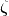
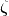

Niggli cell¶
Usage of the code¶
The code is written in C and a python wrapper is prepared in
python directory.
The C code is used to compile with your code. Usual library interface
is not prepared.
The python code is used as a module. To use this, numpy is required.
In both C and python codes, there are two input arguments, lattice
and eps. lattice is a double array with nine elements,
In python, the input array will be fattened in the module. Therefore,
e.g., the following  shape of a numpy array or a
python list is accepted:
shape of a numpy array or a
python list is accepted:
The double variable of eps is used as the tolerance
parameter. The value should be much smaller than lattice parameters,
e.g., 1e-8. How it works is shown in the following section.
Test¶
The test is found in python directory as a python code. A set
of lattice parameters is found in lattices.dat and the
references, which are the reduced lattice parameter made in the
version 0.1.0, are stored in reduced_lattices.dat.
Example¶
An example is found in python directory as a python code.
Algorithm to determine Niggli cell¶
Reference¶
- A Unified Algorithm for Determining the Reduced (Niggli) Cell, I. Krivý and B. Gruber, Acta Cryst., A32, 297-298 (1976)
- The Relationship between Reduced Cells in a General Bravais lattice, B. Gruber, Acta Cryst., A29, 433-440 (1973)
- Numerically stable algorithms for the computation of reduced unit cells, R. W. Grosse-Kunstleve, N. K. Sauter and P. D. Adams, Acta Cryst., A60, 1-6 (2004)
Algorithm¶
A0¶
Define following variables as
They are elements of metric tensor where the off-diagonal elements are doubled. Therefore the metric tensor is represented as
 ,
,  ,  are sorted by their ranges of
angles as shown below.
,  are sorted by their ranges of
angles as shown below.
| Angle | value |
|---|---|
| Acute | 1 |
| Obtuse | -1 |
| Right | 0 |
These values are stored in variables as follows.
- Set initially .
- If , .
- If , .
- If
 , .
, . - If , .
- If , .
- If ,
 .
.


 or and :
or and :